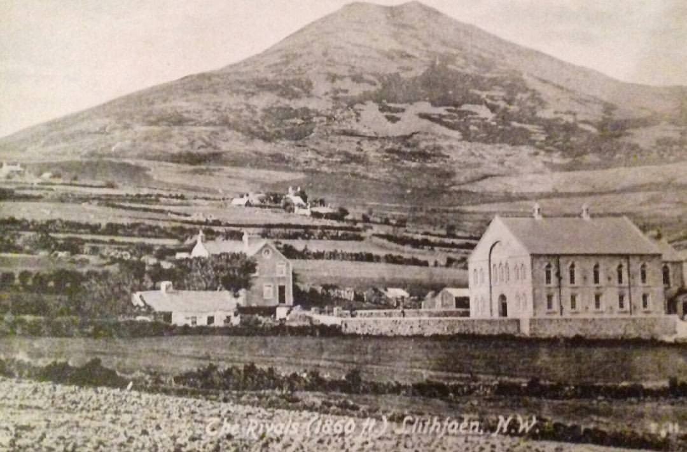
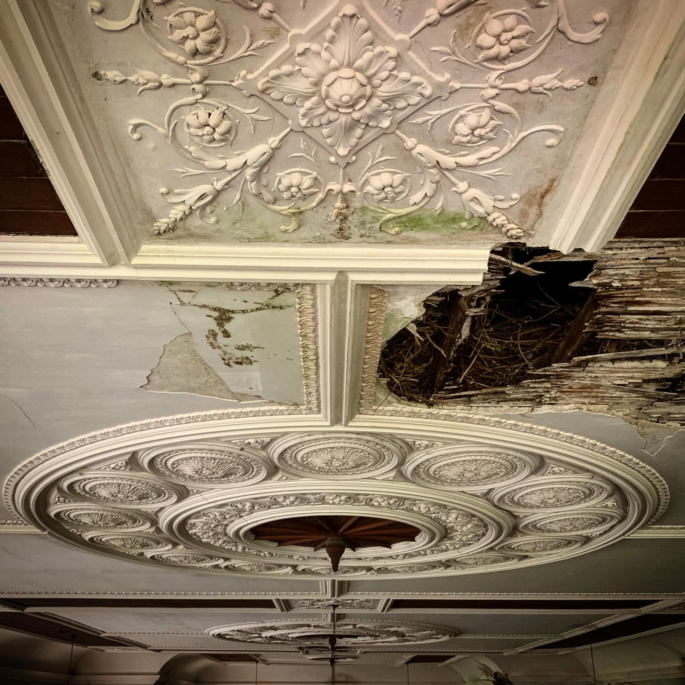

Hanes
Paragraph 1
Paragraph 2
Gwaith atgyweirio / datblygu capel isa' Llithfaen
Paragraph 1
Paragraph 2
O'r diwedd mae'r gwaith wedi cychwyn ar gapel M.C. Llithfaen! Llofnodwyd y les am yr adeilad ym mis Chwefror eleni, ond daeth y cyfnod anodd yma ar ein gwarthaf ac er ein bod wedi sicrhau yr arian daeth y gwaith i stop cyn iddo ychwyn bron.
Ond erbyn hyn mae'r gwaith wedi ail ddechrau ac y mae'r grantiau cychwynnol hyn yn talu i ddiogelu'r to a chryfhau y nenfwd. Diolch i "Cronfa Datblygu Cynaladwy AHNE Llŷn", "Sefydliad Garfield Weston", "Cronfa'r Degwm", "CADW", a "Chronfa Dreftadaeth y Loteri" am ein cefnogi i wireddu y cam hwn.
Ein bwriad terfynol yn yr adeilad yw creu dau lawr yn y prif adeilad: y llawr uchaf yn agored gan gadw nodweddion unigryw y aleri a'r seddi côr; bydd y llawr isaf yn cael ei ddatblygu yn gaffi bychan a chanolfan dreftadaeth yn canolbwyntio ar hanes lleol Tre'r Ceiri.
Wrth gwrs, oherwydd y cyfyngiadau sydd yn bodoli ni fu'n bosib cychwyn ar weithareddau treftadaeth oedd gennym ar y gweill ond cafwyd ambell gyfarfod Zoom yn ystod misoedd y clo. Ein bwriad yw ail ddechrau cyfarfodydd misol pan fydd y sefyllfa yn haws o ran cynnal digwyddiadau mwy dan do.
Mae'n gyfnod heriol iawn yn ariannol i bob mudiad a gan na fedrwn gynnal gweithgareddau a'r biliau yn dal i ddod i mewn yr ydym wedi agor tudalen "Just Giving" - os hoffech gyfrannu at y fenter byddai hyn yn cael ei dderbyn yn ddiolchgar iawn.
Yr ydym yn gweithio y wefan (hon), ac y mae gennym bresenoldeb ar y cyfryngau cymdeithaasol:- hoffwch dudalen Hafod Ceiri ar Facebook a dilynwch @HafodCeiri ar Twitter.
Lluniau i ddwad!

Os hoffech fod ar restr ein cyfeillion - a fyddai'n bosib i chi anfon eich manylion cysylltu cywir i Cyfeillion.HC@hotmail.com